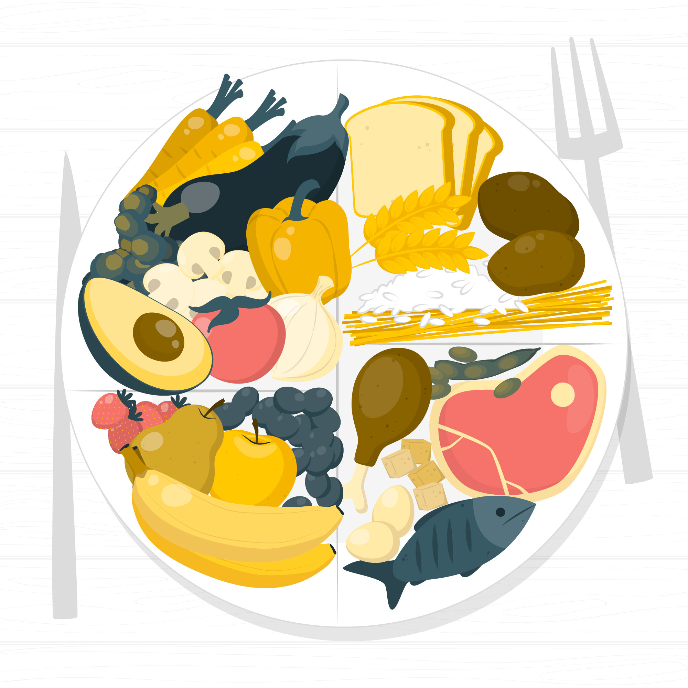

Cada vez que a Leo le hablaban de dieta equilibrada se le venía a la cabeza aquella famosa pirámide de alimentos. Sin embargo, tras leer algunos artículo comprobó que ahora hay una nueva forma de diseñar dietas a medida, usando lo que se denomina plato Harvard.
Plato Harvard

Pulsa en este botón para ver un vídeo sobre el plato saludable
Para saber más sobre la alimentación equilibrada basada en los platos saludables mira este vídeo.